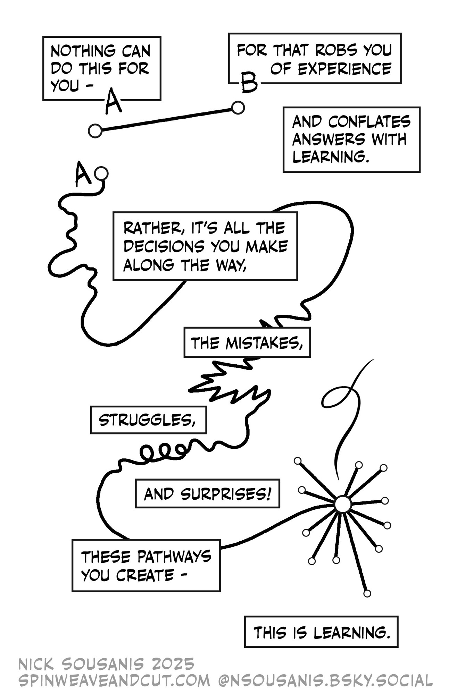

Syllabus
MTH112, Section C
University of Portland, Fall 2026
1 Welcome!
In this course we will cover the foundational mathematical ideas necessary for the study of calculus including modeling and the representation of exponential, logarithmic, rational, and trigonometric functional relationships. We will also work on developing a productive mathematical disposition, including persistence in problem-solving, evaluating the reasoning of others, and formulating mathematical justifications. Targeted toward students continuing to MTH 201, this course does not fulfill the core requirement.
Throughout the semester, you will be asked to make sense of your own mathematical thinking and to analyze the thinking of others. You may already have some familiarity with some of the course material, but would likely benefit from further study. Much like a literature class, you may read Romeo and Juliet in high school, and then again in a upper division college literature course. While the text is the same, the depth of analysis will be deeper and the resulting understanding more substantial. In just the same way, our study of functions will hopefully give a new perspective into how mathematics works. Along the way, I hope for you to deepen your understanding of how you learn best, and to become a part of a supportive community of like-minded learners.
You Belong Here!
In our classroom, diversity and individual differences are respected, appreciated, and recognized as a source of strength. It is our collective responsibility to create a welcoming space where ideas can be challenged while individuals are respected. I ask you to support one another as you develop as mathematicians and analytic thinkers.
2 Class Information
2.1 Meeting Times and Locations
If you’re reading this, you are probably a student enrolled in Section C of MTH 112, Fall 2026. While the other two sections of MTH 112 are covering the same material with a similar course structure, some details will differ. Our section meets at the following times and places:
- MWF 1:35-2:30, DB 230
- T 11:20-12:15, DB 230
2.2 Instructor
Chris Hallstrom, PhD
(he/him)
Students sometimes ask how they should address me. While I won’t be offended if you use my first name, I know that many students aren’t comfortable doing so. I also recognize that I have some amount of privilege in this regard and that many of my colleagues would find it disrespecful or presumptuous to use first names. In solidarity with them I’d suggest that you call me “Dr. Hallstrom” or “Prof. Hallstrom”.
“My First Name” by Susan Harlan, The South Carolina Review, 2017 (49.2)
Contact Information
- Office: Buckley Center 270 – on the second floor of the NW wing (my window overlooks the main quad). While I do have specific times set aside for drop-in hours, you are always welcome to stop by at anytime!
- Office Phone: (503) 943-7165
- Email: hallstro@up.edu
Email is a good way to communicate with me. If you send me email after 5pm, however, there’s a good chance that I will not see it until the following morning. Similarly, I don’t check my email regularly on weekends so you might not get a reply until Monday. I will do my best to respond as soon as I am able, but if you haven’t heard back from me in a timely manner - please feel free to follow-up!
2.3 Drop-In Hours
I am tentatively scheduling drop-in help hours during the following times:
- MW 9:30-10:30
- TR 1-2:30
You are welcome to stop by during these times to ask questions or get help on any aspect of the class. Note that it’s okay if don’t have a specific question – if you’re feeling lost or uneasy about anything, please stop by!
2.4 Course Materials
Textbook
We will be using the open source textbook Active Prelude to Caclulus by Matthew Boelkins. This is a free, open-source text available in both online (HTML) and PDF versions:
I highly recommend that you use the online version as it will give you access to interactive problems embedded in the text. I do suggest downloading the pdf version just in case you need to access the text but don’t have internet access.
If you really want a print version, you can purchase that direct from Amazon for the cost of printing ($17 last time I checked). This is certainly not necessary however!
Course Pack
The activites that we will do in class are all (mostly) contained in the Course Pack available at the campus bookstore. I recommend that you purchase this (again for the cost of printing). You can also find a pdf here:
Any additional handouts or course materials will be posted on our class Canvas page. I will also regularly post a summary of our class activities so if you ever miss class for any reason, you can check there to see what you missed.
Technology
In order to access course materials, I expect that you has access to some kind of device – a desktop computer, laptop, or tablet. We will also make use of the online graphing tool Desmos so if you don’t already have a free Desmos account, I recommend that you sign up for one. It’s not absolutely necessary, but it does allow you to save your work. Which is nice!
In class, we will often be working in small groups and while it’s not necessary that everyone in the group has a device, it’s important that at least one person does. Note that if you already have a graphing calculator, you may find that useful, but my experience is that Desmos is the better tool for our needs.
From time to time, we may also make use of online tools such as Wolfram Alpha for certain calculations. We will discuss in class when such tools are approprate. Note that GenAI tools such as ChatGPT are not appropriate for doing mathematics. Again, we will discuss why this is throughout the semester.
Finally, if you need any assistance getting access to technology, please let me know!
2.5 Important dates
- Mon, Aug. 24: Classes begin
- Fri, Aug. 28: Last day to add/drop
- Mon, Sep. 7: Labor Day – no classes
- Tues, Oct. 6: Mid-semester check-in
- Mon-Fri, Oct. 12-16: Fall Break
- Wed, Oct. 28: UP Next – no classess
- Mon, Nov 22: Last day to Withdraw
- Thur-Fri, Nov 26-27: Thanksgiving Break
- Fri, Dec 4: Last day of classes
- Mon, Dec 7: Final check-in, 1:30-3:30
2.6 “AI”
Generative AI tools such as ChatGPT work by predicting what words will form coherent sentences in the context of the prompt you’ve given it, essentially “autocomplete in overdrive”. This means that Gen AI tools are designed to produce output that sounds convincing without any regard to whether its output is actually correct. The technical term for this is bullshit
This also means that they are not actually doing any mathematics. If ChatGPT can do a calculus problem its because it was trained on an immense catalogue of calculus materials (without the author’s permission). It also means that there’s absolutely no promise that any answers you get from generative AI are correct.
I sometimes hear students say that they use AI as a “study aid” to do things like help explain concepts, to summarize content, or to check their work.
But here’s the thing – those are all activities that are fundamental to the process of learning! Struggling to build your own understanding - to make sense of difficult concepts - is the whole point. If you use Gen AI to do these tasks, you are giving up opportunities to learn. Don’t undermine your growth as a human learner by looking for shortcuts!

Fundamentally, I believe that the use of AI tools in this class ultimately gets in the way of authentic learning.
3 Student Support
Whether it’s working on homework problems, making quiz corrections, or just reviewing class notes, I expect that much of your learning in this course will happen outside of class. You will have questions from time-to-time and you might not want to wait until our next class to get them answered. Keep in mind that mathematics is a cumulative subject where content builds upon prior knowledge; once you get behind it can be hard to catch up.
For all of these reasons, it’s important that you know how to get your questions answered outside of class. Below you’ll find a list of some of the primary ways to get help, but please know that one of my top priorities is to support your learning so if you find you need any additional help accessing support for any reason please let me know!
3.1 Drop-In Hours
I have set aside the times listed below during which I am available for drop-in help. You do not need to let me know you’re coming – just stop by my office (BC 270). Many students find these drop-in hours can be particularly helpful if you are working together with classmates. You can work together at one of the tables down the hall from my office and just pop in when you have any questions.
- Mon, Wed 9:30 - 11
- Tue, Thurs 1-2:30
3.2 Sign-Up Hours
I recognize that your schedule might not allow you to stop by during the posted drop-in hours. Or you simply might find it more convenient to meet with me at a different time. If you go to my Calendly scheduler, you can sign-up for a time slot to meet, either in person or via zoom. If there is a specific time that you would like to meet and you don’t see it available on the Calendly scheduler, please reach out to me via email!
3.3 Open Door
I have the scheduled drop-in hours simply to give you some specific times when you know that I’ll be available – but you are always welcome to stop by my office at any time. Unless I’m in class or in a meeting, I will generally be available to meet with you.
3.4 Math Resource Center
The MRC offers both drop-in tutoring as well as scheduled, individualized help. I will post the MRC schedule on Moodle as soon as it becomes available (usually the second week of the semester).
4 Course Content
In this course we will cover the foundational mathematical ideas necessary for the study of calculus. We will also work on developing a productive mathematical disposition, including persistence in problem-solving, evaluating the reasoning of others, and formulating mathematical justifications. Targeted toward students continuing to MTH 201, this course does not fulfill the core requirement.
By the end of the semester you will be able to…
- Analyze functions defined graphically, numerically, or by formula, including exponential, logarithmic, trigonometric, polynomial, and rational families of functions.
- Perform algebraic computations efficiently and correctly; particularly on exponential, logarithmic, and fractional expressions.
- Construct graphs of trigonometric functions using the properties of the unit circle.
- Use trigonometric, rational, exponential, and logarithmic equations to model situations and solve problems.
4.1 Learning Targets
The bulk of the course content is represented by the following specific topics which we call Learning Targets. Your goal over the course of the semester is to develop your understanding of these topics and to demonstrate that understanding via various assessment tasks – primarily our weekly check-ins. These topics are generally aligned with the indicated sections of our book.
Algebra
- A1 Solving equations and inequalities
-
I can use algebraic operations to solve equations and evaluate inequalities.
- A2 Factoring, multiplying, and rational expressions
-
I can rewrite rational and polynomial expressions through factoring, polynomial multiplication, and simplifying fractional expressions.
Functions
- F1 Inputs and outputs
-
I can use function notation, find and simplify the output of a function given an input, and find an input that produces a given output; I can do this for functions given by a formula, a table, and a graph. (1.1 & 1.2)
- F2 Rate of change
-
I can find the average rate of change in a function on a given interval and interpret the meaning. (1.3)
- F3 Linear and quadratic functions
-
I can model linear and quadratic relationships with equations and find key features graphically and algebraically. (1.4 & 1.5)
- F4 Compositions
-
I can find the composition of functions given graphs, tables, and contexts, and interpret the meaning (1.6)
- F5 Inverses
-
I can determine whether a function has an inverse and find the formula of the inverse of basic functions that have an inverse. (1.7)
- F6 Translations and piecewise functions
-
I can translate graphs functions and construct piecewise functions. (1.8 & 1.9)
- F7 Function review
-
I can interpret, represent, and evaluate problems using all previous function learning objectives.
Trigonoetry
- T1 Unit circle and arc length
-
I can generate graphs of a circular functions given appropriate information about the circle being traversed, and describe key features of the function. (2.1, 2.2, & 2.3)
- T2 Sinusoidal functions
-
I can find the amplitude, period, and midline of a transformed version of the basic sine or cosine function; and I can find the formulas for transformed versions of the basic sine or cosine function that have certain described properties. (2.4)
- T3 Right Triangles
-
Given a right triangle with partial information about its sides and angles, I can determine the missing information for the remaining sides and angles, even if the quantities involve an unknown variable. (4.1)
- T4 Finding Angles
-
I can interpret inverse trigonometric functions and use them to find angles. (4.3 & 4.4)
- T5. Other Trig Functions
-
I can define tangent and reciprocal trigonometric functions and their graphs. (4.2 & 4.5)
- T6 Trig Review
-
I can interpret, represent, and evaluate problems using all previous exponential and log learning objectives.
Exponentials and Logarithms
- E1 Exponent Properties
-
I can simplify exponential expressions and solve equations using properties of exponents. (3.0)
- E2 Exponential Functions
-
I can construct graphs and equations of exponential and logarithmic functions given contextual data or two point values. (3.2 & 3.2)
- E3 Equations with Exponents and Logs
-
I can simplify logarithmic expressions using properties of logarithms and find exact solutions to equations involving exponential and logarithmic expressions. (3.4, 3.5, 3.6)
- E4 Exponential Review
-
I can interpret, represent, and evaluate problems using all previous exponential and log learning objectives.
Rational Functions and Polynomials
- R1 Polynomials and Power Functions
-
I can identify the degree, zeros, turning points, and long-range behavior of a polynomial given its formula or graph, and I can find the formula of a polynomial that fits given data about its behavior. (5.1, 5.2, & 5.3)
- R2 Rational Functions
-
I can identify important features of rational functions, such as the asymptotes, end behavior, intercepts and holes. I can find the formula of a rational function that fits given data about its behavior. (5.4 & 5.5)
4.2 Mathematical Practice
While not directly tied to specific topics, we will also work on developing more general aspects of a mathematical practice including:
- Ability to communicate mathematical thinking effectively, including correct use of vocabulary, notation, and mathematical representations.
- Ability to develop strategies for solving complex or unfamilar problems.
- Ability to use technology effectively.
5 Class Structure
How does this class work?
This course is guided by the philosophy that learning mathematics requires focused effort, reflection, and revision. Assessment of your learning is based on a proficiency system, in which you have multiple chances to demonstrate proficiency, with opportunities to reflect on and improve previous understanding.
5.1 Attendance and Engagement
Since we will be doing much of our learning through collaborative in-class activities, it’s important that you to come to class prepared and ready to engage. This means being on-time, completing preview activities prior to class, working productively on in-class activities, asking questions, and listening to and supporting your classmates.
While I do expect you to be in class, I also recognize that life happens and occasionally things come up that might prevent you from being there. Unless it becomes a habit, there is no penalty to missing class apart from missing out on that day’s activity. If you do miss class, I expect you to check the class Canvas page to see what we covered that day and/or come see me with your questions.
Finally, if you find yourself missing class more than a few times, you can expect that I will check with you to see how I can support your attendance better.
5.2 Preview and In-Class Activities
Most of the time when we begin a new section from the book (approximately every other class period), I will assign a short Preview Activity to be completed prior to class. These are designed to introduce and motivate new material. We will begin class by discussing these activities, so it’s important that you come to class having completed it before hand.
Some sections, however, we will be skimming or even skipping entirely. In those cases, I will not assign a preview activity.
Note that assigned preview activities may not be made up. They are designed to support our day-to-day work, and if you miss class they no longer serve that purpose.
Much of our in-class time will be spent working in small groups on additional activities designed to build up our understanding. While I won’t generally collect these, I will from time-to-time to help me monitor class progress and student engagement.
5.3 Homework
To assist you in building your understanding with the course material and in practicing new skills, I will assign short weekly homework sets. We will set aside some time in class, to discuss these problems in our groups.
In addition, you have access to an online homework system - called WebWork - to give you additional practice as needed. This homework will not be graded for correctness - but completion can be used as evidence of engagement.
Instructions on how to use WebWork will be posted on Canvas.
Weekly Engagement Report
Every week, I will ask you to complete a short reflection assignment summarizing your engagement with the course for that week. Your report should include the following information:
- Did you complete the Preview Activites and the assigned homework problems this week? Did you find them helpful?
- What questions came up for you while doing these problems or doing the class activities? Did you get stuck on any particular problems and if so, how did you resolve these questions?
- What questions do you still have?
- How confident are you about your understanding of this week’s materal?
5.4 Labs
Approximately every 2 weeks, I’ll assign a lengthier homework set that is designed to give you a chance to engage with the material more deeply. These problems are meant to be challenging and you should expect to have questions! They might also introduce new concepts or ask you to apply what you’ve learned to new situations.
In addition to giving you an opportunity to extend your engagement with the mathematical content of the course, these assignments are also a chance to practice communicating your mathematical thinking. It’s not enough to solve a problem if you can’t convince someone else that you know what you’re talking about!
5.5 Due Dates and Extensions
Just like in the “real world”, due dates in this class exist and are important. They help all of us plan our lives and stay organized. That said, there is usually a certain amount of flexibility and so if something comes up that’s going to make it difficult (or impossible) to complete an assignment on time, just let me know. Simply send me an email letting me know when you expect to get the assignment to me.
- If you need to ask for an extension, please let me know in a timely manner (preferably before the due date).
- If you ask for an extension, you should plan on handing in work within one week of the due date.
- You do not need to give me a reason for your extension request. I trust that if you are asking for an extension then you have a reason!
- There is no penalty for late work except that you might not get timely feedback on your work. This is especially relevant for labs which can be revised and resubmitted.
- If you ask for many extensions, you can expect that I will reach out to see if we can work together to find ways for you to keep up with the work in the course.
There are, however, two hard deadlines to be aware of: Oct. 9th (Friday before Fall break) and Dec. 4th (last day of classes). Except in unusual circumstances or by prior arrangement, I will not accept work after those dates.
Finally, note that since the purpose of the Preview Activities is to prepare you for that day’s class, these may not be handed in late.
5.6 Collaboration
Unless otherwise instructed, I encourage you to work together with classmates on homework or other assignments although any work that you hand in should be your own. You should also acknowledge your collaborators. Unless otherwise instructed, all check-ins should be done individually.
5.7 Weekly Check-Ins
Most weeeks (typically Tuesdays) we will have a short check-in that focuses on 1-3 recently covered topics. This is the primary mechanism for you to demonstrate proficiency on our specific learning targets - every learing target will appear at least 3 in-class check-ins.
For each Learning Target that appears on a check-in, I will provide feedback as follows:
P Proficient. You have demonstrated sufficient understanding with that particular topic.
R Minor Revisions Needed. You have demonstrated an almost complete understanding, but there are minor errors or gaps in your explanation.
N Not Yet Proficient. More significant errors or gaps indicate that you are still working on building a sufficient understanding of this topic.
I Incomplete. Fragmentary or missing response.
Revisions
If a learning target is marked as needing minor revisions (R) you may write up a complete, corrected solution and hand it in within one week. Your revision should include:
- A brief sentence explaining what your error was.
- A brief description of the steps you took to correct your mistakes.
- A complete, rewritten solution. Do not simply write over your original problem.
Staple your new solution on top of your original check-in and indicate clearly that this is a Revision. If you successfully correct your errors, I will convert your R to a P.
Re-Assessemnts
Each Learning Target will appear on at least three in-class check-ins (including the midterm and final check-ins) so if you aren’t able to demonstrate proficiency the first time a Learning Target appears, you will have additional chances in class. In addition, you may also show proficiency outside of class:
- You may do a re-assessment during drop-in hours. Note that during drop-in hours, I will prioritize students who are there with questions, so help expedite this process I ask that you let me know in advance which Learning Target you want to re-assess. You must also bring a re-assessment ticket with you (see below).
- You may schedule a re-assessment using my Calendly link. If there’s a time you’re looking for that you don’t see available on Calendly, just let me know!
- Re-assessments done outside of class may be completed either in written form or through conversation with me.
Finally, please note the following restrictions on re-assessing:
- You may not attempt more than two (2) re-assessments outside of class per week.
- You may not attempt to re-assess more than one learning target per day. Exceptions to this may be made in certain cases where Learning Targets are closely aligned.
- No re-assessments, other than the final check-in, will be given during finals week.
Re-assessment Ticket
If you are reassessing a learning target outside of class, you must submit written responses, on a separate piece of paper, to the following questions at the time of your reassessment:
- What were your mistakes/gaps/sticking points on your previous attempt?
- What steps did you take to improve your understanding? Did you re-do the problem? List any resources you used to study and prepare for this attempt.
5.8 Midterm and Final Check-Ins
Instead of a traditional midterm or final exam, we will instead have a longer check-in which covers all of the Learning Targets that we’ve covered up to that point. These are not worth anything more – they are simply additional opportunities to demonstrate proficiencies. If you’ve already done that to your satisfaction, then these are optional!
Midterm Check-In
- Tuesday, October 6th
Final Check-In
- Monday, Dec. 7th, 1:30-3:30
5.9 Grades
5.10 Course Level Learning Objectives
By the end of the semester you will be able to…
Analyze functions defined graphically, numerically, or by formula, including exponential, logarithmic, trigonometric, polynomial, and rational families of functions.
Perform algebraic computations efficiently and correctly; particularly on exponential, logarithmic, and fractional expressions.
Construct graphs of trigonometric functions using the properties of the unit circle.
Use trigonometric, rational, exponential, and logarithmic equations to model situations and solve problems.
Develop persistence in the face of challenging problems and reflective practices to improve your learning.
Communication mathematics effectively using appropriate justifications and representations.
6 Reminders and Expectations
Canvas Consider Canvas your “base camp” for this course. All information, assignments, updates, Zoom links, etc. will be posted there. If you have a question, it’s probably answered on Canvas (perhaps in this very syllabus…). I expect you to check the site frequently to stay on top of deadlines and course communications.
I believe in you. Doubting yourself? It’s human. Need an affirmation? Let me know… I’ve got your back!
7 Grades
Extrinsic motivation, which includes a desire to get better grades, is not only different from, but often undermines, intrinsic motivation, a desire to learn for its own sake.
– Alfie Kohn, “The Case Against Grades”
Grades, as they are traditionally thought of, are inherently imprecise and don’t represent a full picture of your growth and learning over the course of a semester. Worse than that, research shows that grades undermine the learning process in several key ways:
Grades tend to diminish interest in what you’re learning.
Grades create a preference for the easiest task so that students tend to do what they need to get a certain grade, but no more.
Grades tend to reduce the quality of student thinking. The moment we ask ``how am I doing?’’ we lose track of what we’re doing.
Although I am required to submit a grade for each student at the end of the semester, my goal is to de-emphasize the role of grades in this course so that as much as possible our focus is on learning.
For this reason, we will focus on qualitative rather than quantitative feedback (i.e. points) to assess your progress in this course. Your understanding of the course material, as assessed in terms of demonstrating proficiency on the stated learning targets, is ultimately what matters.
Your goal should be to demonstrate proficiency on as many of the learning targets as you can by the end of the semester. I will keep track (and I encourage you to keep track as well) every time you demonstrate proficient level work. The course level learning goals will be assessed primarily through homework reports, labs, and other reflective assignments. The other, content focused, learning targets primarily through the in-class weekly check-ins.
Grade Guidelines
Throughout the semester, I will periodically ask you to reflect on your learning and describe your progress. At the end of the semester, we will collaboratively determine your grade based on evidence of proficiency in our learning targets. The following is a framework that I find helpful in thinking about letter grades, you may find it helpful too.
- A
- This grade indicates superior work that demonstrates a deep understanding of the material and an ability to apply the material to unfamiliar situations. To earn an A, you should:
- Demonstrate proficiency (P) on all, or almost all, of the content learning targets.
- Complete all labs, demonstrating proficency in both mathematics as well as effective communication.
- Demonstrate evidence of significant engagment throughout the semester.
- B
- This grade indicates good work that is eminently satisfactory. You have demonstrated an ability to use and extend knowledge of the material in some contexts, including subsequent classes in this subject. To earn a B, you should:
- Demonstrate proficiency (P) on a significant majority of the content learning targets.
- Complete most of the assiged labs, demonstrating proficiency in both mathematical content as well as effective communication
- Demonstrate evidence of engagment throughout the semester.
- C
- This grade indicates competent work that demonstrates a minimally acceptable level of knowledge relevant to the course which should allow you to continue learning in this field of study. To earn a C, you should:
- Demonstrate proficiency (P) on at most of the content learning targets.
- Complete some of the assiged labs, demonstrating proficiency in both mathematical content as well as effective communication
- D/F
- A grade of D represents meaningful but unsuccessful attempt at earning a C or above; your understanding of the content is minimal and you would very likely struggle to continue study in this field. An F represents a lack of engagement, effort, or understanding such that there is no evidence of meaningful progress.
Engagement
Your course grade will primarily be based on your understanding of course content and while engagement in the course is not itself evidence of understanding, it does usually help us achieve that goal. Here are some ways that you can engage with the class:
- Attend class regularly and on-time.
- Complete preview activities or written homework before class so you’re prepared to engage with that day’s material.
- Contribute to in-class group work
- Complete weekly engagement reports
- Come to drop-in hours or the MRC to ask questions
- Complete labs on time – and ask for help when needed
Partial Grades
A grade modifier may be added to your base grade as follows.
- plus (+)
- this modifier can be added to your grade if you have met the standards stated above and you have engaged in the course in particularly significant ways.
- minus (-)
- this modifier may be added to the base grade if you have met the standards for a particular grade, but lack of engagement has prevented you from doing more in the course. Alternatively, this modifier could indicate that you have met almost all of the standards for a lower grade and you have engaged in the course in a meaningful way.
Collaborative Grading
At mid-semester and again at the end of the semester, we will compare notes about where you are in your learning. I’ll ask you to present evidence of your learning and in this way, we will determine your your grade collaboratively.
The intention here is to help you focus on learning in a way that is more organic, as opposed to simply working as you think you’re expected to. If this process causes more anxiety than it alleviates, please see me at any point to confer about your progress in the course – I’m always happy to talk with you about your learning!